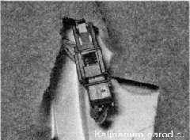
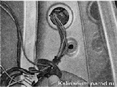
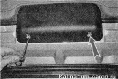
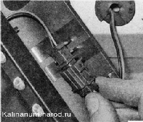

Задний фонарь - снятие и установкаСнятие 1. Подготавливаем автомобиль к выполнению работы . Выключаем наружное освещение. 2. Под полкой багажного отделения, через отверстие в обивке, разъединяем колодки жгута проводов заднего фонаря.

3. Отворачиваем две гайки крепления заднего фонаря и снимаем фонарь с кузова (см. «Задний фонарь — замена лампы»). Извлекаем резиновый уплотнитель из отверстия кузова и вытягиваем провода из салона. Установка Устанавливаем задний фонарь обратной последовательности. ДОПОЛНИТЕЛЬНЫЙ ФОНАРЬ СИГНАЛА ТОРМОЖЕНИЯ - СНЯТИЕ И УСТАНОВКАСнятие 1. Подготавливаем автомобиль к выполнению работы. 2. Открыв дверь багажного отделения, ключом TORX Т20 отворачиваем два винта крепления фонаря дополнительного сигнала торможения. 3. Отводим фонарь, вытягивая жгут проводов из спойлера, разъединяем колодку и снимаем фонарь дополнительного сигнала торможения с автомобиля.  Фонарь дополнительного сигнала торможения - неразборный. Если перестают гореть несколько светодиодов, замените фонарь в сборе. Установка Устанавливаем фонарь дополнительного сигнала торможения в обратной последовательности. |